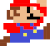
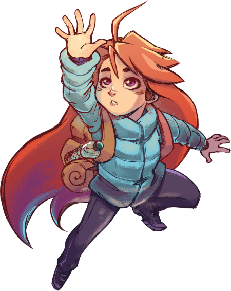
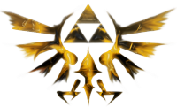

A Nostálgia Começa Aqui!
O modo retrô que você não conhece!


+10 mil jogos
Nostálgicos
+100 mil jogadores
Profissionais
+200mil Horas
Jogadas

Jogo no estilo side-screen onde jogamos com a camera lateral como mario, donkey kong e sonic.
Jogos no estilo ação aventura são jogos que nos dão certa liberdade e com uma história mais trabalhada como Zelda, Pokemon e digimon.
são jogos baseados em ação e aventura, no estilo side screen mas focado em grande exploração como metroid, castlevania e Ori.
Os jogos retro são voltados a publicos mais antigos,que focavam onde a jogabilidade e história tinha mais importancia que seus gráficos , alguns jogos como Zelda e pokemon eram os mais jogados por jogadores que gostavam de aventuras explorativas, e jogos como Mario e Sonic focavam em um publico que tinha objetivo de desafios maiores em uma unica tela.
Triforce the Legend of Zelda
Escolha seu game
Mario
Super Nintendo
SNES
Sonic
MegaDrive
Sega Genesis
Zelda
Super Nintendo
SNES
A página Retro-Game-Center veio de uma ideia para conteúdo de jogos antigos e nostálgios para mostrar a nova geração que os jogos antigos apesar de não terem muita qualidade gráfica,são capazes de nos proporcionar experiências incriveis com sua jogabilidade e hitórias que faziam deles o passatempo de jogadores mais casuais.